5020A24 heater box - dismantle and rebuild at bench
- Path
- Procedures > 50 AUXILIARY UNITS > 5020 HEATER > 5020A BOX AND COMPONENTS > 5020A24 heater box - dismantle and rebuild at bench
- Kind
- repair procedure (removal / refitting; the operation number is the code)
- Applies to
- all engines; all production periods
- Interactive page
- https://sloeber94.github.io/elrnDB-fMltpl/en/#/2891778
Applies to: all engines; all production periods
 Removing
Removing
 Refitting
Refitting1. Disconnect the electrical connections (1a, 1b, 1c, 1d, 1e).
 | Name | Connector |
|---|---|---|
1a | Interior compartment air electric fan relay |
| Name | Connector |
|---|---|---|
1b | Climate control fan control |
| Name | Connector |
|---|---|---|
1c | Air conditioner/heater control light |
| Name | Connector |
|---|---|---|
1d | Air fan adjustment resistance |
| Name | Connector |
|---|---|---|
1e | Passenger compartment ventilation fan |
2. Disconnect the wiring from the retaining bands.
3. Remove the complete wiring.
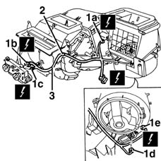
Applies to: all engines; all production periods
1. Disconnect the transmission cable from the lever.
2. Undo the bolts.
3. Remove the inlet casing.
4. Undo the bolts.
5. Remove the cover.
6. Move the seal.
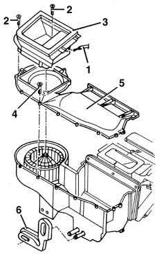
Applies to: all engines; all production periods
1. Working through the opening (1a), release the retainers (1b) and remove the lever (1c).
2. Extract the lever.
3. Extract the flap.
4. Recover the bush.
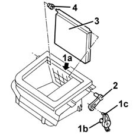
Applies to: all engines; all production periods
1. Undo the bolts.
2. Release the relay.
3. Remove the shield.
4. Undo the bolt.
5. Remove the plate (5a), the pipes (5b) and the seals (5c).
6. Extract the heater.
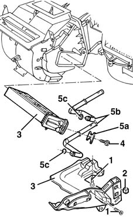
Applies to: all engines; all production periods
1. Disconnect the transmission cables (1a) from the retainers (1b).
2. Recover the controls mounting.
3. Undo the bolts.
4. Remove the heater casing.
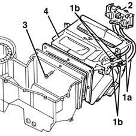
Applies to: all engines; all production periods
1. Lift up the retainer (1a) and remove the lever (1b).
2. Recover the cursor.
3. Undo the bolt and recover the washer.
4. Remove the lever.
5. Press the retainer (5a) in the direction of the arrow and remove the lever (5b).
6. Press the retainer (6a) in the direction of the arrow and remove the lever (6b).
7. Working through the opening (7a), release the retainer (7b) and remove the lever (7c).
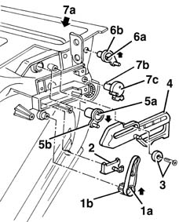
Applies to: all engines; all production periods
1. Undo the bolts.
2. Separate the two halves of the heater casing.
3. Recover the four flaps.
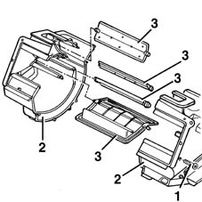
Applies to: all engines; all production periods
1. Undo the bolt.
2. Release the retainer.
3. Rotate the fan in an anti-clockwise direction and extract it.
4. If necessary, press the anti-vibration rubber mountings (4a) and separate the fan (4b) from the support (4c).
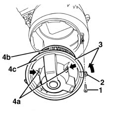
Applies to: all engines; all production periods
1. Undo the bolts.
2. Remove the resistance.
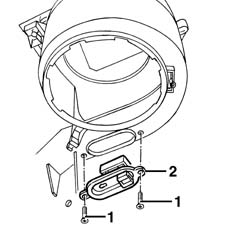
Applies to: all engines; all production periods
Refitting
RemovingCheck that the components are not damaged.
Position the resistance and fix it using the bolts.
If removed, place the fan in the housing engaging the rubber anti-vibration mountings.
Insert the fan and turn it in a clockwise direction and fix it using the bolt.
Position the four flaps.
Join the two halves of the heater casing and fix them using the bolts.
1. Refit the lever (1a), making sure that the tooth (1c) engages in the notch (1b), then engage the retainer (1d) in the housing visible from the compartment (1e).
2. Refit the lever and engage the retainer.
3. Refit the lever and engage the retainer.
4. Position the lever (4a) returning the pins (4b, 4c, 4d) to their housings.
5. Position the washer and tighten the bolt.
6. Position the cursor.
7. Refit the lever and engage the retainer.
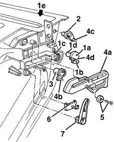
Applies to: all engines; all production periods
Position the heater casing and fix it using the bolts.
Position the controls mounting and connect the transmission cables to the retainers.
Insert the heater.
Position the new seals, the pipes and the plate on the heater and then fix them using the bolt.
Position the shield and fix it using the bolts.
Secure the relay.
1. Position the bush.
2. Refit the flap.
3. Fit the lever in place.
4. Fit the lever (4a) in place, engaging the retainers (4b) in the housing visible from the compartment (4c).
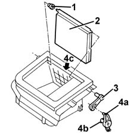
Applies to: all engines; all production periods
Position the seal.
Position the cover and fix it using the bolts.
Positin the inlet casing and fix it using the bolts.
Connect the transmission cable to the recirculation flap lever.
Position the wiring.
Connect the electrical connections and secure the wiring using the retaining bands.
Topics linked from this page (5)
- G45 Air conditioner/heater control light
- H081 Climate control fan control ( AIR CONDITIONING )
- J35 Interior compartment air electric fan relay
- N85 Passenger compartment ventilation fan
- O30 Air fan adjustment resistance